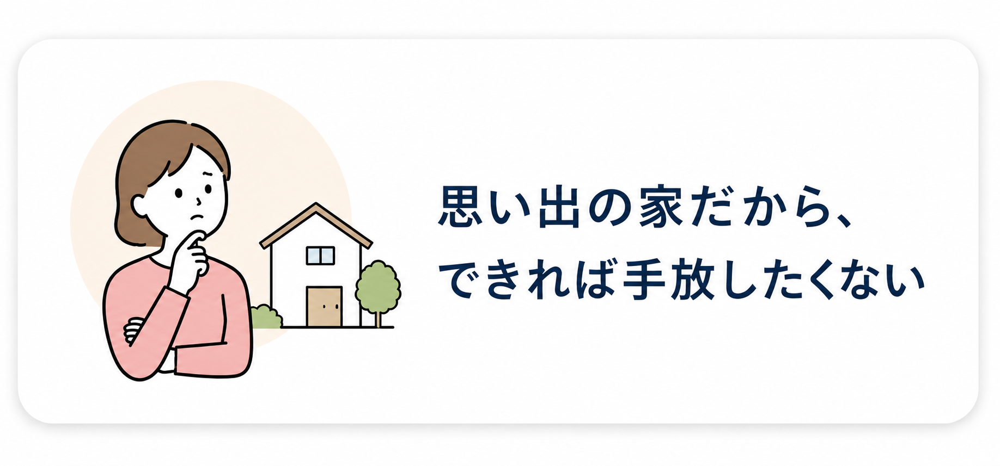
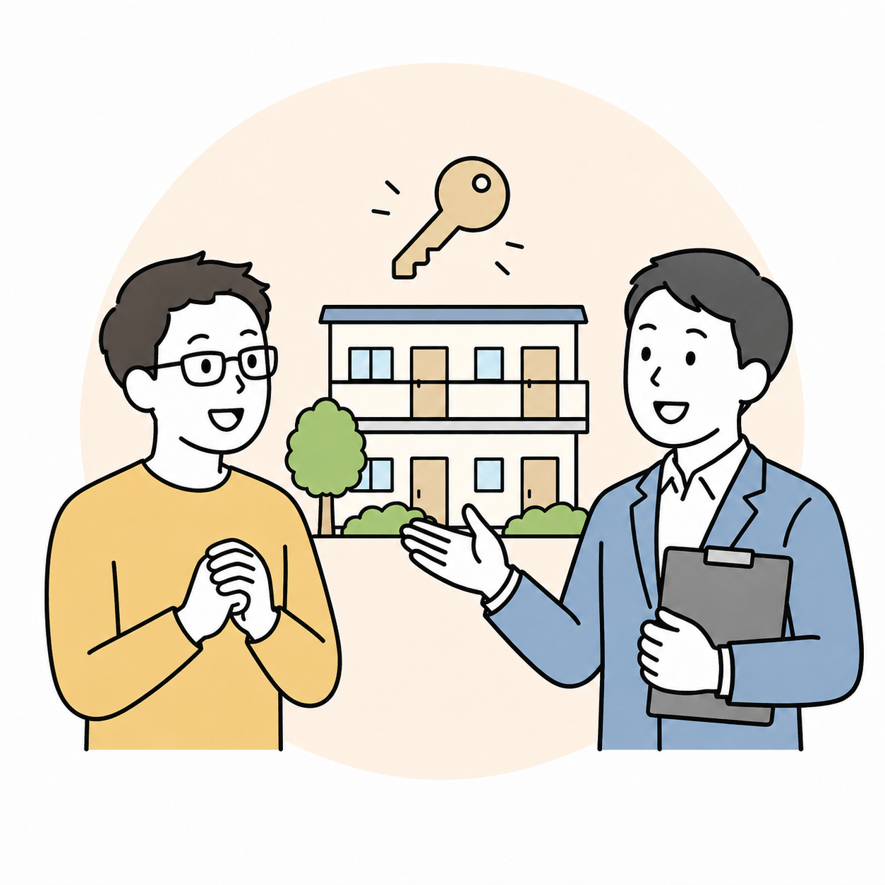

売却するには気持ちの整理がつかない
相続した家や思い出のある家を、できれば残したまま活用したい。
WORRIES
思い出のある家だからこそ、すぐに売却する決断ができない。 そんな所有者様の選択肢として、賃貸活用という方法があります。

相続した家や思い出のある家を、できれば残したまま活用したい。
貸せる状態にするには費用がかかり、回収できるか判断しづらい。
入居者募集、契約、管理対応まで自分で行うのは負担が大きい。
SERVICE
所有者様の空き家をお預かりし、当社負担で住まいとして使える状態へ整えます。 その後、賃貸運営による収益から費用を回収し、契約条件に基づいて返還します。
「売る」以外の選択肢を残しながら、空き家の維持負担を軽くし、住まいとして再び活かすことを目指します。
空き家をお預け
改修・募集・運営
契約条件に基づき返還
MERIT
当社負担で改修するため、活用開始時の大きな費用負担を抑えられます。
売却以外の方法として、所有したまま空き家を住まいとして再活用できます。
入居者募集から賃貸運営まで当社が対応し、所有者様の負担を軽減します。
FLOW
まずは空き家の状態や所有者様のご希望を確認し、活用方針をご提案します。
STEP 01

まずは空き家の所在地や状態、ご希望をお伺いします。
STEP 02

当社が費用を負担してリノベーションし、住まいとして整えます。
STEP 03

入居者募集から賃貸運営まで当社が対応し、安定した運営を目指します。
FAQ
建物の状態、所在地、権利関係などによって対応可否が変わります。まずは現状を確認したうえでご案内します。
基本的には当社負担で改修し、賃貸運営による収益から費用回収を行う想定です。具体条件は個別に確認します。
契約条件に基づき、物件を返還します。返還時期や状態については契約前に明確にします。